Маркетинг — чёрный ящик
«Плачу подрядчику 200 тысяч, пациентов не прибавилось.»
Маркетолог показывает отчёт с графиками. В отчётах журнала первичных записей — те же 30 в месяц, что и полгода назад. Связи между бюджетом и выручкой не видно.
Каждый понедельник — 6 цифр своей клиники за прошлую неделю на одном экране. Без роста рекламного бюджета и без нового персонала.
4 видео-модуля, xlsx-калькулятор воронки, дашборд на 6 конверсий, 11 шаблонов и регламентов.
Большинство собственников думают, что у них проблема с рекламой. На самом деле пациенты теряются не на этапе рекламы. А на этапе звонка или приёма.
«Плачу подрядчику 200 тысяч, пациентов не прибавилось.»
Маркетолог показывает отчёт с графиками. В отчётах журнала первичных записей — те же 30 в месяц, что и полгода назад. Связи между бюджетом и выручкой не видно.
«Всё в один канал. Обычно — в Яндекс.Директ. Запустил — пошли заявки. Успокоился. Ничего другого не делаешь. И в какой-то момент канал сломался или подорожал. Полная просадка.»
Когда выручка падает на 30–50% за один месяц, понимаешь — это была игла, а не маркетинговая стратегия.
«Попробовали ВК — слили 150 тысяч, ноль записей.»
Запустили без замера стоимости обращения. Через 2 месяца смотрите итог — потратили, не получили. Решение: оставить тестовые бюджеты или закрыть канал — принять не на чём.
Не курс по маркетингу. Не методичка по найму. Это конструктор: 4 модуля, xlsx-калькулятор и дашборд для еженедельной сводки на 6 конверсий. Чтобы за 14 дней увидеть, где конкретно у вас сливаются деньги, и закрыть одну точку.
Шкала четырёх зон: меньше 1 млн ₽/кресло — старт. 1–2 млн — середняк. 2–3 млн — норма. Больше 3 млн — лидер рынка. Это язык собственника, не бухгалтера.
От рекламы до явки на план лечения. Без знания этих 6 цифр управление клиникой идёт вслепую.
Большая часть собственников теряют пациентов на звонке администратора или на презентации плана у врача. Это закрывается регламентами, а не новым подрядчиком по контекстной рекламе.
Скрипт администратора, чек-лист первичного приёма на 23 пункта, скрипт куратора лечения, регламент возвратного звонка. xlsx с уже зашитыми формулами расчёта.
80% слива бюджета — здесь, в контуре 2 (звонки → запись → явка → план).
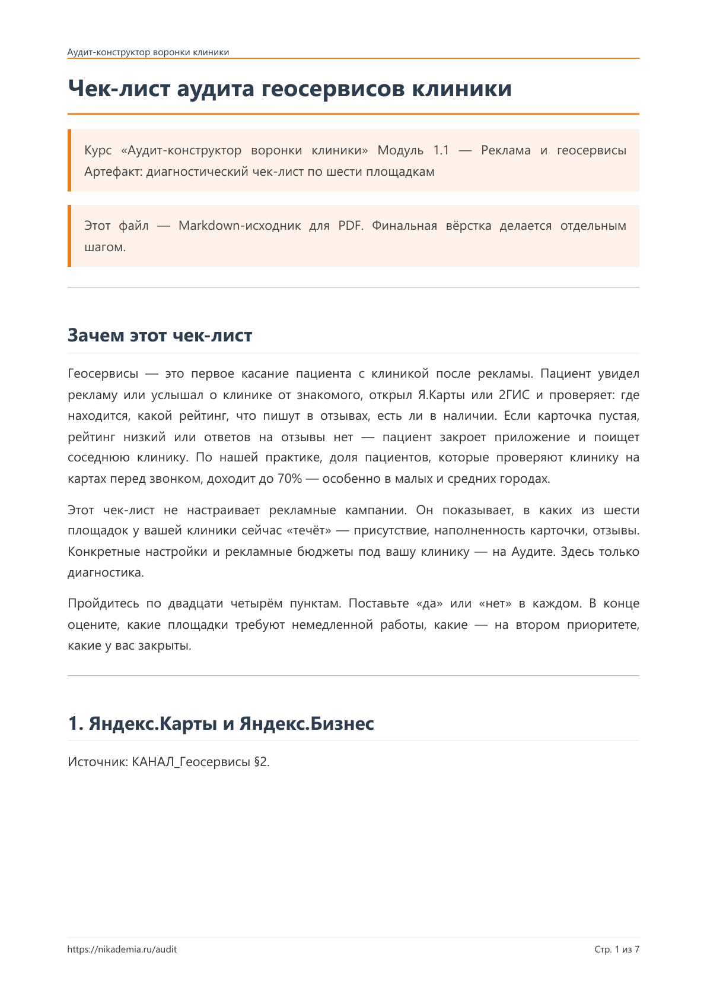
Что должно быть в карточке на Яндекс.Картах, 2ГИС, ПроДокторов. Как считать стоимость обращения по каналам. Как ставить задачу подрядчику с измеримыми показателями.
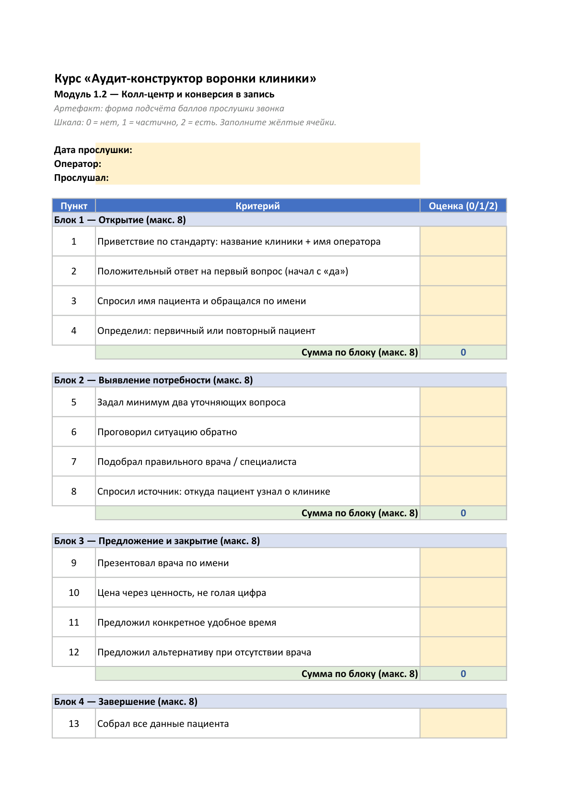
Прослушка 10 звонков по чек-листу. Регламент работы с недозвонами. Скрипт возвратного звонка. Почему звонок — главное узкое место.
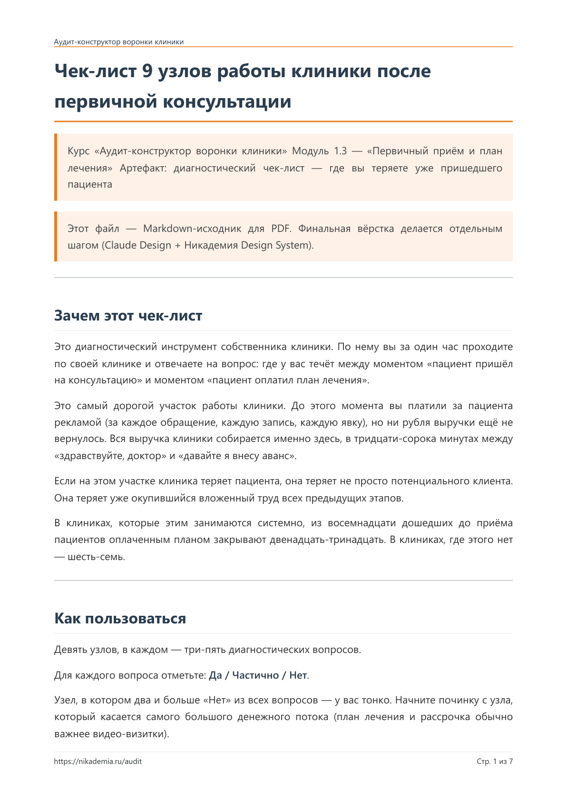
Чек-лист первичного приёма врача. Скрипт куратора для презентации основного плана и альтернативного. 3 фразы, которые сливают пациента на пороге презентации плана.
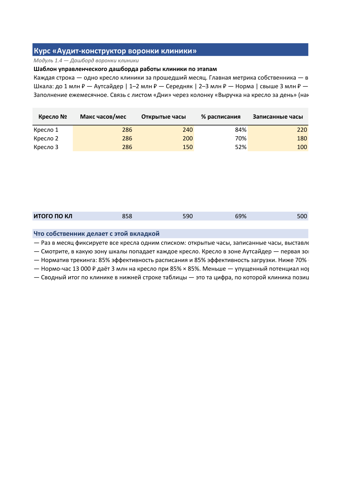
Еженедельный отчёт на 6 конверсий — 30 минут в неделю. Как связать данные из CRM, МИС и журнала звонков в одну таблицу. Что делать, когда цифра просела.
Готовые рабочие документы для администратора, куратора лечения, главного врача: скрипты, чек-листы, антипаттерны звонков и приёма.
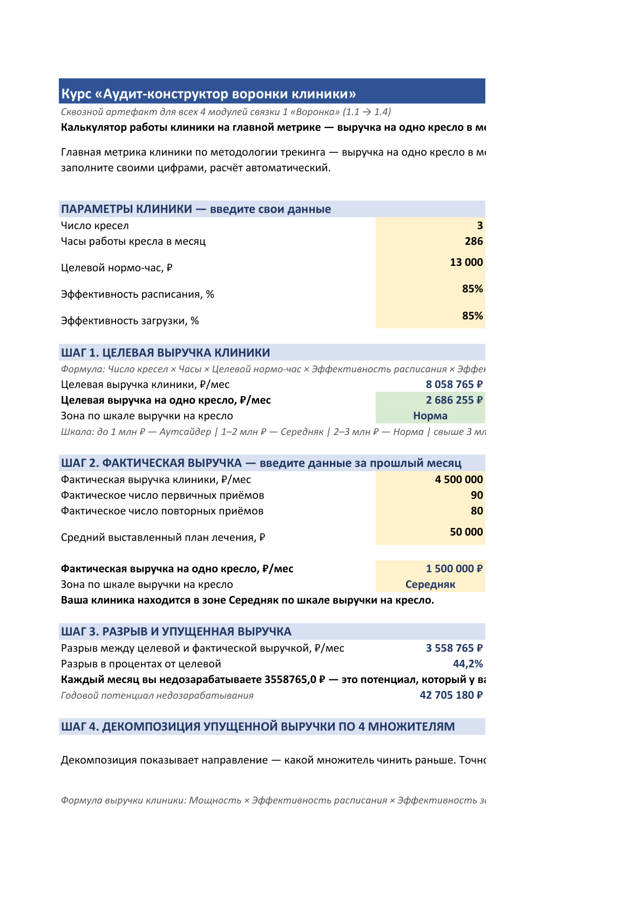
Введите 8 цифр своей клиники за прошлый месяц — увидите упущенную выручку по 6 этапам с подсветкой узкого места.
Кривая роста:
72 млн ₽ (2022) → 93 (2023) → 165 (2024) → 261 (2025)
Источник: данные ФНС, 2026.
Новый филиал в 2025:
Открыт в июне. 4 кресла. 23 млн ₽ за первые 6 месяцев работы — благодаря отлаженной системе масштабирования.
Что меняли поэтапно:
Через 4 месяца после открытия — оборот вырос, но снова в ноль. Посчитали загрузку клиники — 31%. Маркетинг = 20% оборота. Стоимость одного нового пациента из рекламы окупается 1 к 1,5, а не 1 к 5. 30% новых пациентов за месяц — с рекламы, 70% — органически.
«Ошибочно пытались нанять больше врачей, не загрузив имеющихся.» — вывод собственника после расчёта.
Скриншоты и цитаты из закрытых чатов учеников программ Никадемии.
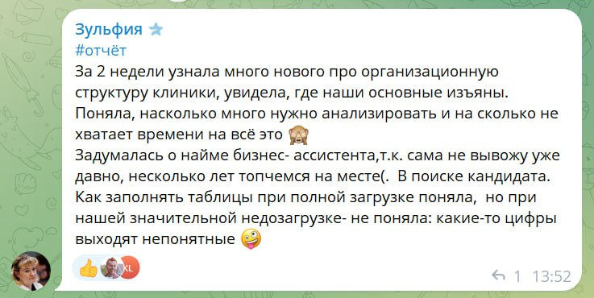
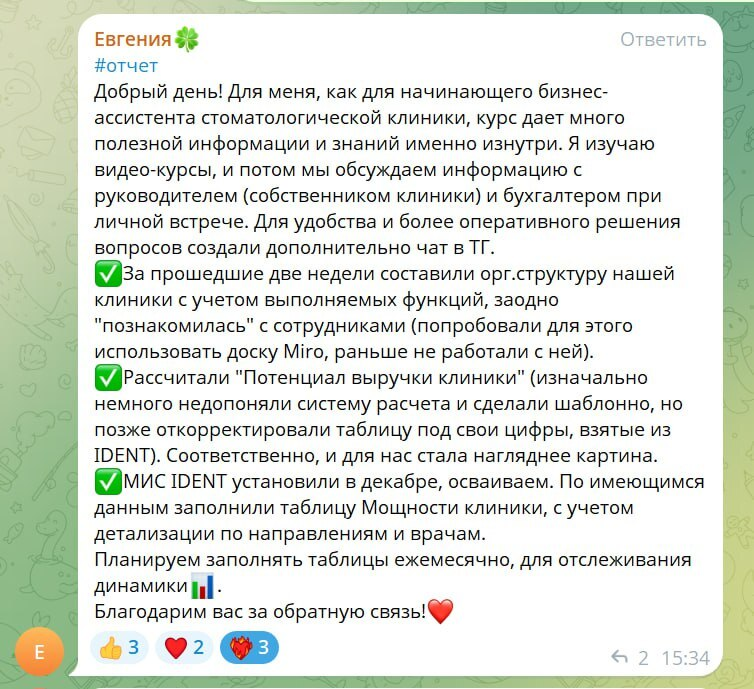
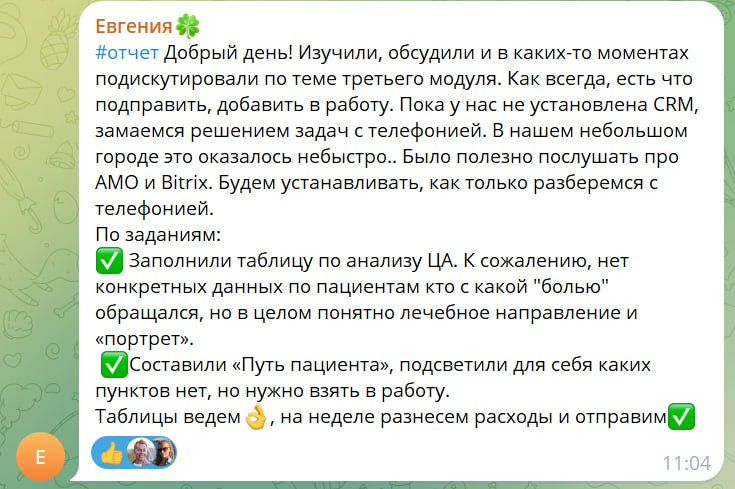
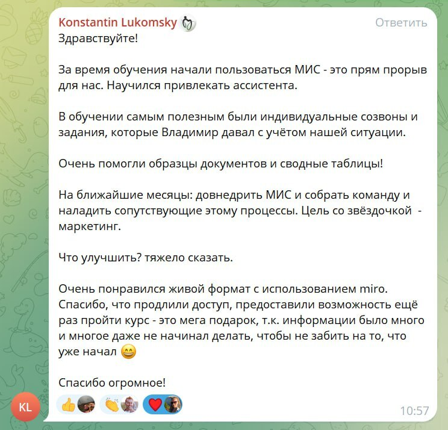
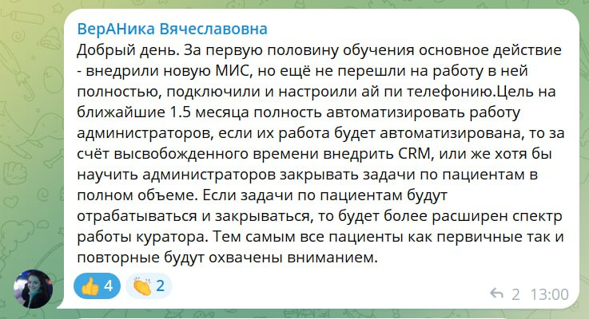
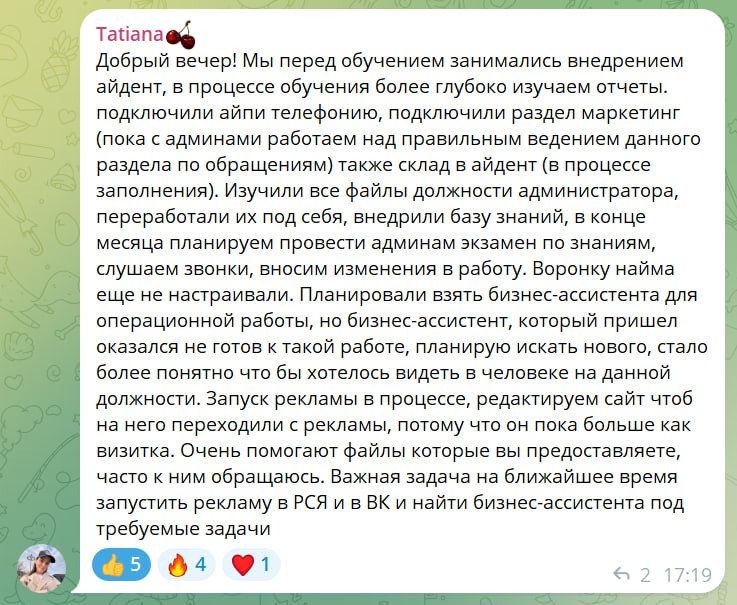
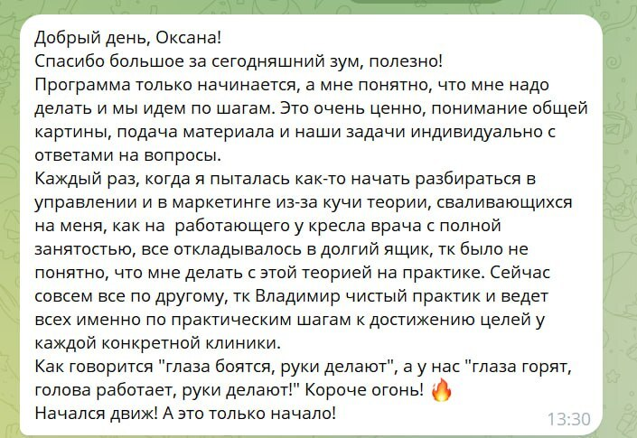
«За 2 недели увидела, где наши основные изъяны. Несколько лет топчемся на месте — задумалась о найме бизнес-ассистента.»— собственник клиники в 4 кресла, после программы 4 мес Никадемии
«МИС-таблица определяет пациента по звонку — администраторы очень довольны.»— собственник клиники в 2 кресла, после программы 4 мес Никадемии
«Шаблоны приготовили заранее — теперь не тратим время на найм.»— бизнес-ассистент клиники, после программы 4 мес Никадемии
«Я работающий у кресла врач — раньше теория откладывалась в долгий ящик. Сейчас Владимир — практик, ведёт по практическим шагам. Глаза горят, голова работает, руки делают.»— собственник-врач, после программы 4 мес Никадемии
Да. Методология применима со стадии 1 (1–2 кресла, выручка до 2 млн ₽/мес). Подходит как первая итерация управления — простроить регламенты, увидеть свои цифры, понять следующий шаг.
С натяжкой. Модули 1.3 (приём и план лечения) и 1.4 (дашборд) — да. Модуль 1.2 про колл-центр и регламенты администратора — для одного кабинета избыточен.
Нет. xlsx-калькулятор и дашборд готовы — формулы зашиты, нужно просто ввести свои цифры. Базовый уровень Excel.
Видео — около 1,5 часа суммарно. Первое заполнение калькулятора — 20 минут с данными CRM под рукой. Дальше — 30 минут в неделю на дашборд.
30-минутная разборная встреча на nikademia.ru/audit — на ней разбираем вашу конкретную воронку и подбираем следующий шаг. Слотов 10 в месяц, запись в порядке очереди.
На 2 месяца с момента оплаты. Этого хватает, чтобы пройти видео, заполнить шаблоны и собрать первый дашборд за 4–6 недель.
Откройте журнал выручки за прошлый месяц. Разделите на число кресел. Получите цифру — выручка на одно кресло, в месяц. Это главная управленческая метрика клиники.
Фокус — загрузка расписания и базовая воронка пациентов. Курс закроет это полностью.
Фокус — поднять стоимость нормо-часа врача и системно работать с базой повторных пациентов. Курс — отличный первый шаг.
Можно задуматься о четвёртом-пятом кресле или втором филиале. Курс закроет диагностический срез.
Этот курс может быть избыточен. Лучше сразу на nikademia.ru/audit — 30-минутный разбор и подбор следующего шага.
После прохождения 4 модулей и заполнения дашборда у вас будет видимая картина — какие цифры воронки в вашей клинике в норме, какие проседают, и в какой из 4 зон по выручке на кресло вы находитесь.
Следующий шаг — 30-минутная разборная встреча на nikademia.ru/audit. Разбираем вашу конкретную воронку, проверяем гипотезы, подбираем дальнейший формат работы.
4 видео-модуля, xlsx-калькулятор, дашборд на 6 конверсий, 11 регламентов и шаблонов.
Доступ к материалам на 2 месяца. Покупка — через защищённый чекаут GetCourse.